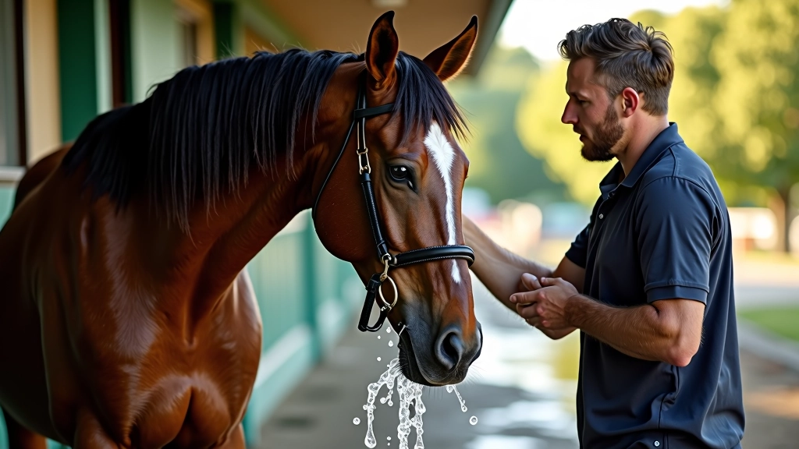
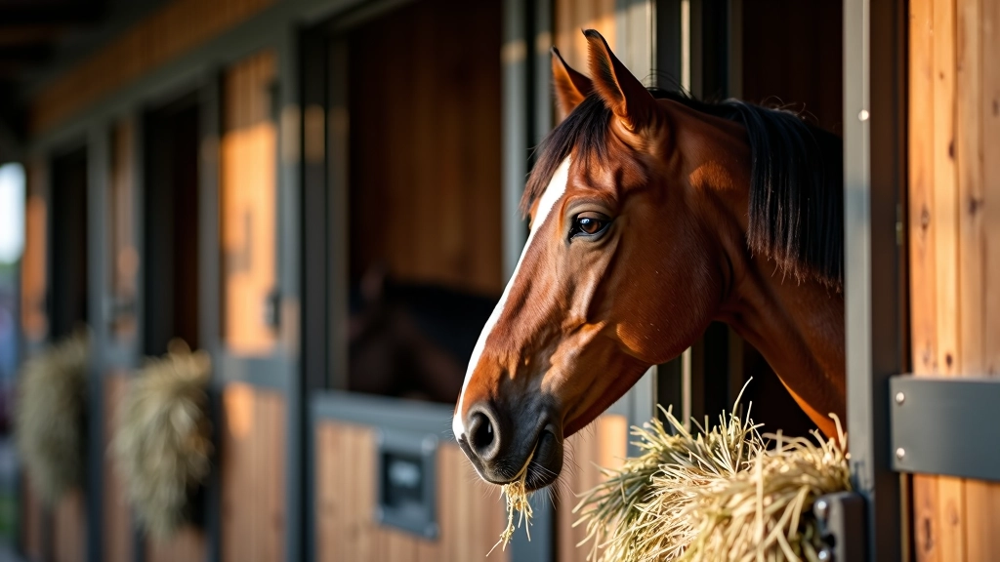
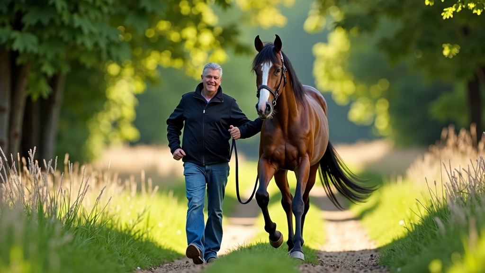
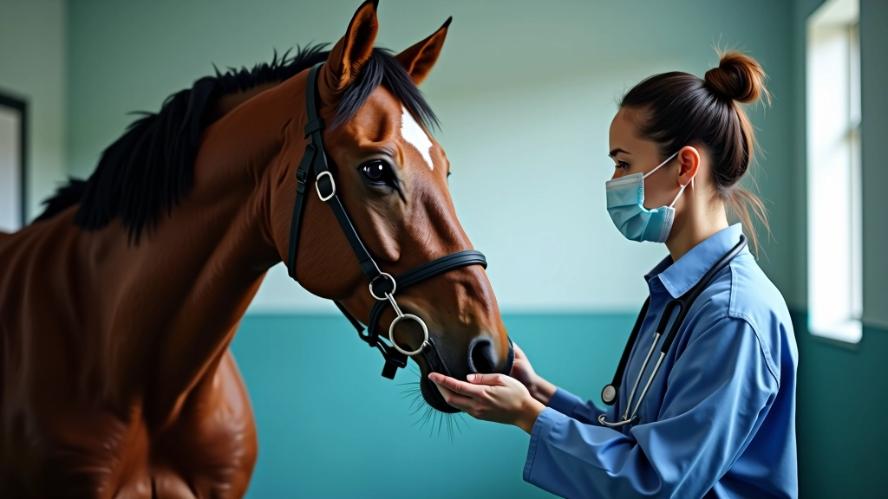

برنامج التدريب التدريجي لبناء التحمل
كيفية بناء قدرة التحمل بشكل آمن وفعّال على مدة عدة أسابيع. يبدأ من الأساسيات وينتقل تدريجياً لسباقات أطول.
تقنيات التعافي السريع والفعّال بعد السباق الشاق. رعاية ما بعد المجهود الشديد تحسّن الأداء المستقبلي للحصان.

بعد سباق طويل، لا ينتهي العمل — بل يبدأ فصل جديد. التعافي السريع والصحيح ليس مجرد رفاهية، إنه ضرورة أساسية. حصانك قدّم جهداً هائلاً، وعضلاته وجهازه العصبي بحاجة إلى وقت كافٍ للاستعادة والتقوية. الفارق بين حصان يتعافى بشكل صحيح وآخر لا يفعل قد يكون شهراً كاملاً من الأداء المتدهور.
في هذا الدليل، نستعرض الطرق المجربة التي يستخدمها المتخصصون لضمان تعافٍ سريع وآمن. من الساعات الأولى بعد السباق إلى الأسابيع التالية، كل خطوة تُحدث فرقاً حقيقياً.
الساعات الأولى بعد السباق هي نافذة ذهبية. يكون جسم الحصان في حالة عالية من الاستجابة للعلاجات والعناية. لا تتركه فقط في الإسطبل — كل دقيقة مهمة.
ابدأ برش الحصان بماء فاتر لخفض درجة حرارته تدريجياً. لا تستخدم ماءً بارداً جداً — قد يسبب صدمة. بعد 15-20 دقيقة، قدّم له رشفات صغيرة من الماء مع القليل من الملح. كثير من المربين يضيفون شوارع (electrolytes) مخصصة للخيل — وهذا فعال جداً.
مسّح عرقه برفق باستخدام حبل خاص أو قطعة جلد ناعمة. هذا ليس فقط لتنظيفه — بل يحسّن الدورة الدموية ويساعد عضلاته على الاسترخاء. أترك له وقتاً للوقوف والتنفس براحة قبل أن تضعه في مكانه.

اختر رعايةً تناسب مستوى حصانك وحالته البدنية. تفقد حالة الطقس والمسارات قبل السباق. استشر طبيب بيطري متخصص إذا كان لديك أي مخاوف صحية قبل البدء في برنامج تدريبي جديد أو سباق طويل.

بعد 2-4 ساعات من السباق، قدّم له علفاً خفيفاً أولاً. نعم، سيكون جائعاً، لكن معدته حساسة الآن. ابدأ بكميات صغيرة من التبن الجيد أو الشعير المطبوخ. بعد ساعتين، يمكنك زيادة الكمية تدريجياً.
الترطيب أهم من الطعام. استمر في تقديم الماء كل 30-45 دقيقة لمدة 6 ساعات الأولى. أضف شوارع تحتوي على البوتاسيوم والصوديوم — حصانك فقد الكثير من هذه المعادن مع العرق. الدراسات تشير إلى أن الترطيب المناسب يقلل وقت التعافي بنسبة 35-40%.
في الأيام التالية، عُد تدريجياً إلى الجدول الغذائي الطبيعي. أضف الخضروات الغنية بالفيتامينات والمعادن — جزر، شمندر، تفاح. هذه تساعد على استعادة الطاقة والقوة بشكل أسرع.
قد تبدو متناقضة، لكن الحركة البطيئة تُسرّع التعافي أكثر من الراحة الكاملة. في اليوم التالي للسباق، قدّم حصانك في نزهة خفيفة جداً لمدة 15-20 دقيقة فقط. هذا يساعد على تقليل الألم العضلي وتحسين الدورة الدموية.
في الأيام التالية، زيادة الحركة تدريجياً — نزهة 30 دقيقة، ثم 45 دقيقة، لكن بدون أي حمل أو تدريب قاسٍ. لا تركض وترتفع عليه — اسمح له بالسير الهادئ فقط. استمر في هذا لمدة 5-7 أيام على الأقل.
المساج واللف البارد (cold therapy) مفيدان جداً. كثير من المربين الاحترافيين يستخدمون أكياس ثلج على الأرجل الأمامية لمدة 10-15 دقيقة، مرتين يومياً. هذا يقلل الالتهاب والتورم.


لا تتوقف عن الملاحظة بعد السباق. راقب تنفس حصانك — يجب أن يعود إلى الطبيعي (12-16 نفساً في الدقيقة) خلال ساعة. راقب نبضه — يجب أن يهدأ من 180+ نبضة في الدقيقة (أثناء السباق) إلى أقل من 60 خلال ساعة.
انظر إلى عينيه وأذنيه — هل هو يقظ وحاضر الذهن؟ لاحظ شهيته — هل يأكل بطبيعية؟ إذا رفض الطعام لأكثر من ساعتين، فقد يكون هناك مشكلة. تحقق من درجة حرارته — يجب ألا تتجاوز 38.5 درجة مئوية.
استدعِ الطبيب البيطري إذا لاحظت عرج، تورم غير عادي، إسهال، أو أي علامات غير طبيعية. الاكتشاف المبكر للمشاكل يمنع حدوث مضاعفات أكبر.
بعد الأسبوع الأول، حصانك يبدأ في العودة تدريجياً. لكن لا تستعجل. الكثير من المربين يخطئون بالعودة للتدريب الثقيل بسرعة — وهذا يؤدي إلى إصابات.
في الأسبوع الثاني، يمكنك البدء بتمارين خفيفة جداً — قفز بسيط أو سرعة معتدلة. في الأسبوع الثالث، أضف المزيد من الحمل تدريجياً. الهدف: العودة الكاملة بعد 4-6 أسابيع.
راقب وزنه وعضلاته. إذا فقد الكثير من الوزن، يحتاج إلى تغذية إضافية غنية بالبروتين. أضف مكملات مثل الأحماض الأمينية والفيتامينات — هذا يسرّع استعادة العضلات.
التعافي الصحيح بعد السباق الطويل ليس مجرد مسألة راحة — إنه استثمار في صحة حصانك المستقبلية. حصان متعافٍ بشكل صحيح سيكون أقوى وأسرع وأكثر قدرة على تحمل السباقات القادمة.
لا تتسرع. كل خطوة تُحدث فرقاً — من أول رشة ماء فاتر إلى آخر نزهة هادئة قبل العودة للتدريب. اتبع هذه الخطوات بعناية، وسترى نتائج حقيقية في أداء حصانك على المدى الطويل.

كتبه
فريق التحرير والمراجعة
كتبه فريق عين الخيل التحريري، متخصص في تقديم إرشادات عملية وسهلة المتابعة لمربي الخيل والفرسان.
كيفية بناء قدرة التحمل بشكل آمن وفعّال على مدة عدة أسابيع. يبدأ من الأساسيات وينتقل تدريجياً لسباقات أطول.

تمارين وطرق علمية لتقوية أرجل وجسم الحصان دون التسبب في إصابات. أساسيات التقوية والوقاية.

ما يحتاجه الحصان من سوائل وغذاء لأداء أفضل. جداول تغذية مجربة من محترفين في السباقات.